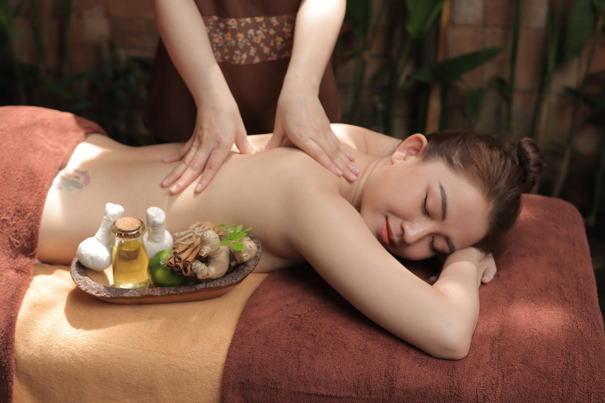

Dịch Vụ Dưỡng Sinh Đông Y
Liệu Pháp Chăm Sóc Sức Khỏe & Phục Hồi Toàn Diện
Trị Liệu Cơ Vai Gáy
Giúp giảm đau mỏi, giải phóng cơ bị tắc nghẽn, lưu thông khí huyết, hỗ trợ phục hồi cơ vai gáy bằng các động tác bấm huyệt – xoa bóp chuyên sâu theo phương pháp Đông y.

Hỗ Trợ Xương Khớp
Liệu trình dưỡng sinh Đông y hỗ trợ cải thiện đau nhức xương khớp, kích thích lưu thông máu, giúp hệ vận động dẻo dai, giảm tê mỏi chân tay và tăng sức khỏe tổng thể.
Hạ Chế Mầm Mống Bệnh Tật
Thanh lọc cơ thể, kích hoạt tuần hoàn năng lượng, loại bỏ độc tố tích tụ, giúp nâng cao sức đề kháng, phòng ngừa mầm mống bệnh tật tiềm ẩn trong cơ thể.
Dưỡng Sinh Cơ Thể
Chăm sóc toàn thân bằng tinh dầu thảo dược kết hợp massage cổ truyền giúp thư giãn sâu, kích thích lưu thông máu và phục hồi năng lượng tích cực cho cơ thể.

Xem chi tiếtDưỡng Sinh Xương Cốt
Kết hợp tinh hoa Đông y và kỹ thuật massage trị liệu giúp tăng cường độ đàn hồi cho gân cốt, hỗ trợ điều hòa khí huyết và cải thiện hệ thống xương khớp toàn thân.

Châm Cứu Trị Liệu
Phương pháp châm cứu cổ truyền giúp điều hòa âm dương, thông kinh hoạt lạc, hỗ trợ điều trị nhiều bệnh lý mãn tính và tăng cường sức khỏe tổng thể.